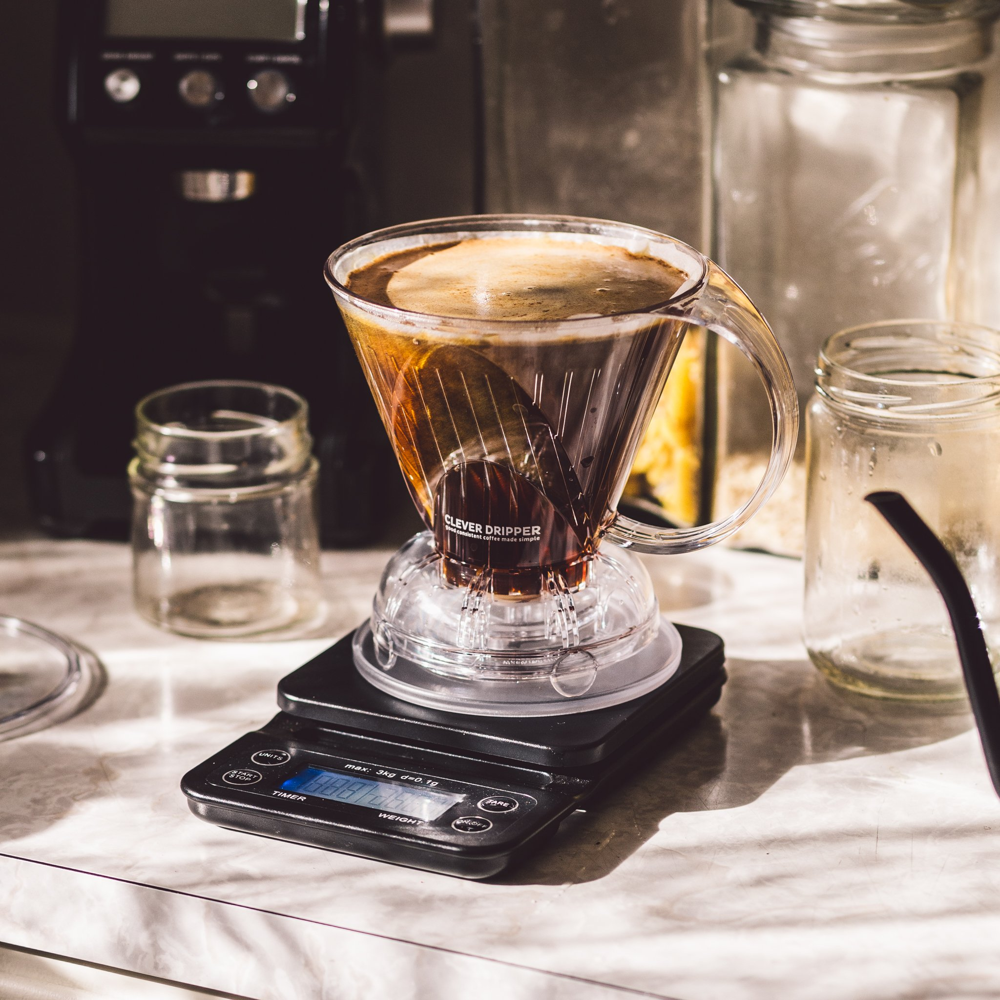
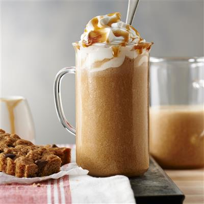
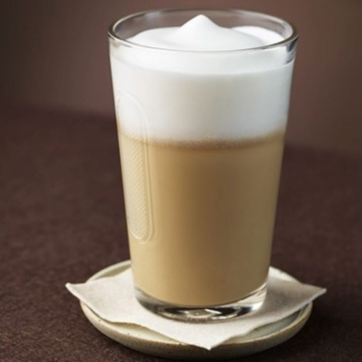

-

Cold Brew Coffee
Cold brewed with finest Arabica beans, Bolt coffee shots at first of its kind in India.
-
French Press Coffee
French press doesn't soak up flavor and adds tiny bits of coffee grounds in the coffee that percolates flavor.
-

Moka Pot
Brews coffee by passing boiling water pressurized by steam through ground coffee.
-
Aero Press Coffee
why AeroPress coffee tastes so good: Total immersion of the grounds in the water results in rapid yet robust extraction of flavor.
-

Americano
The term "caffè Americano" specifically is Italian for "American coffee".
-
 Clever Dripper
The Clever Coffee Dripper combines the best features of French press and filter drip brewing, eliminating the drawbacks of each.
-

Turkish Coffee
Turkish coffee is special because it refers to a method of brewing very finely ground coffee.
-
Espresso
Ditch stress with Espresso.
-
Cappuccino
Cappuccino originated as the coffee beverage kapuziner in the Viennese coffee houses in the 1700s.
-
 Frappe
A frappé coffee, Greek frappé, Nescafé frappé, or just frappé is a Greek iced coffee drink made from instant coffee, water, sugar, and milk.
-
 Latte
Stressed, blessed and Latte Obsessed. Don't be late for Latte.
-
Mocha
A caffè mocha, also called mocaccino, is a chocolate-flavoured variant of a caffè latte.